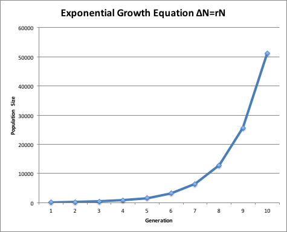
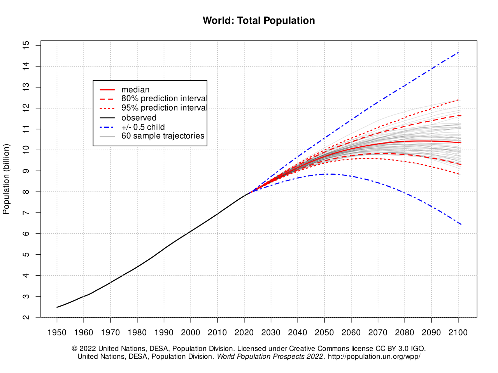
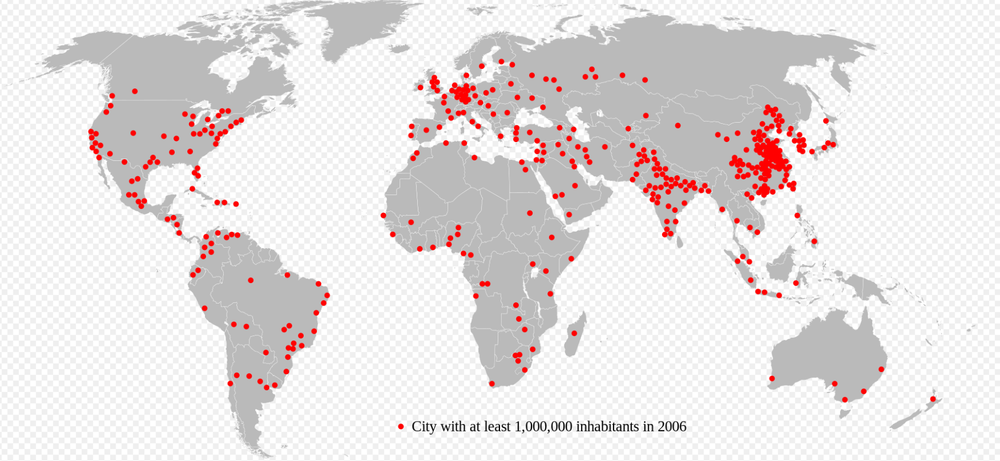
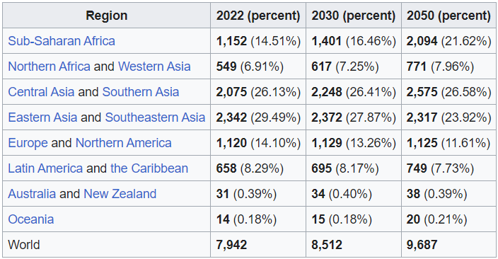
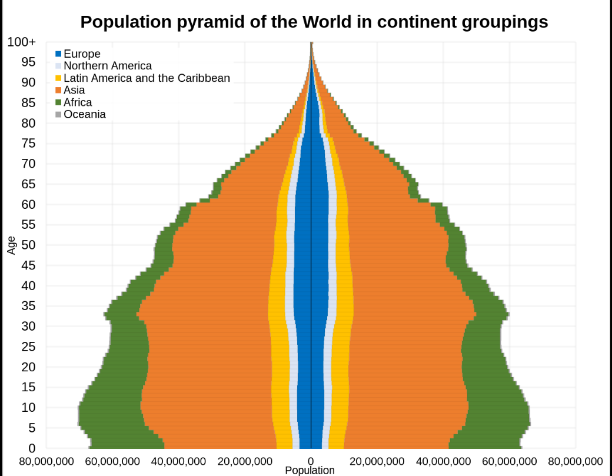
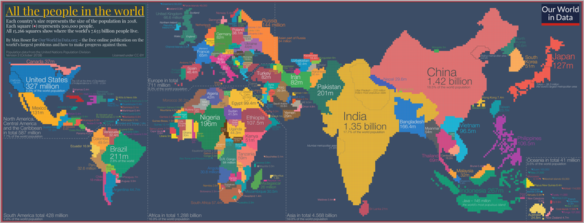

In world demographics, the world population is the total number of humans currently living. It was
estimated
by the United Nations to have exceeded eight billion in mid-November 2022. It took around 300,000 years
of
human prehistory and history for the human population to reach one billion and only 222 years more to
reach
8 billion.
The human population has experienced continuous growth following the Great Famine of 1315–1317 and the
end
of the Black Death in 1350, when it was nearly 370,000,000.The highest global population growth
rates,
with increases of over 1.8% per year, occurred between 1955 and 1975, peaking at 2.1% between 1965 and
1970.The growth rate declined to 1.1% between 2015 and 2020 and is projected to decline further in
the
21st century.The global population is still increasing, but there is significant uncertainty about
its
long-term trajectory due to changing fertility and mortality rates.The UN Department of Economics
and
Social Affairs projects between 9 and 10 billion people by 2050 and gives an 80% confidence interval of
10–12 billion by the end of the 21st century,with a growth rate by then of zero. Other demographers
predict that the human population will begin to decline in the second half of the 21st century.
The total number of births globally is currently (2015–2020) 140 million/year, which is projected to
peak
during the period 2040–2045 at 141 million/year and then decline slowly to 126 million/year by 2100.The
total number of deaths is currently 57 million/year and is projected to grow steadily to 121
million/year by 2100.
The median age of human beings as of 2020 is 31 years.
Estimates of world population by their nature are an aspect of modernity, possible only since the Age of
Discovery. Early estimates for the population of the world date to the 17th century: William Petty,
in
1682, estimated the world population at 320 million (current estimates ranging close to twice this
number);
by the late 18th century, estimates ranged close to one billion (consistent with current estimates).
More refined estimates, broken down by continents, were published in the first half of the 19th century,
at
600 million to 1 billion in the early 1800s and 800 million to 1 billion in the 1840s.

It is difficult for estimates to be better than rough approximations, as even current population
estimates
are fraught with uncertainties from 3% to 5%.
 During the European Agricultural and Industrial Revolutions, the life expectancy of children increased dramatically.The percentage of the children born in London who died before the age of five decreased from 74.5% in 1730–1749 to 31.8% in 1810–1829.Between 1700 and 1900, Europe's population increased from about 100 million to over 400 million.Altogether, the areas populated by people of European descent comprised 36% of the world's population in 1900. Population growth in the Western world became more rapid after the introduction of vaccination and other improvements in medicine and sanitation.Improved material conditions led to the population of Britain increasing from 10 million to 40 million in the 19th century.The population of the United Kingdom reached 60 million in 2006.The United States saw its population grow from around 5.3 million in 1800 to 106 million in 1920, exceeding 307 million in 2010. The first half of the 20th century in Imperial Russia and the Soviet Union was marked by a succession of major wars, famines and other disasters which caused large-scale population losses (approximately 60 million excess deaths).After the collapse of the Soviet Union, Russia's population declined significantly – from 150 million in 1991 to 143 million in 2012 – but by 2013 this decline appeared to have halted. Many countries in the developing world have experienced extremely rapid population growth since the early 20th century, due to economic development and improvements in public health. China's population rose from approximately 430 million in 1850 to 580 million in 1953,and now stands at over 1.3 billion. The population of the Indian subcontinent, which was about 125 million in 1750, increased to 389 million in 1941;today, India, Pakistan and Bangladesh are collectively home to about 1.63 billion people.Java, an island in Indonesia, had about 5 million inhabitants in 1815; it had a population of over 139 million in 2020.In just one hundred years, the population of Brazil decupled (x10), from about 17 million in 1900, or about 1% of the world population in that year, to about 176 million in 2000, or almost 3% of the global population in the very early 21st century. Mexico's population grew from 13.6 million in 1900 to about 112 million in 2010.Between the 1920s and 2000s, Kenya's population grew from 2.9 million to 37 million.
The UN estimated that the world population reached one billion for the first time in 1804. It was another 123 years before it reached two billion in 1927, but it took only 33 years to reach three billion in 1960.Thereafter, it took 14 years for the global population to reach four billion in 1974, 13 years to reach five billion in 1987, 12 years to reach six billion in 1999 and, according to the United States Census Bureau, 13 years to reach seven billion in March 2012.The United Nations, however, estimated that the world population reached seven billion in October 2011. According to the UN, the global population reached eight billion in November 2022,but because the growth rate is slowing, it will take another 15 years to reach around 9 billion by 2037 and 20 years to reach 10 billion by 2057.Alternative scenarios for 2050 range from a low of 7.4 billion to a high of more than 10.6 billion.Projected figures vary depending on underlying statistical assumptions and the variables used in projection calculations, especially the fertility and mortality variables. Long-range predictions to 2150 range from a population decline to 3.2 billion in the "low scenario", to "high scenarios" of 24.8 billion.One extreme scenario predicted a massive increase to 256 billion by 2150, assuming the global fertility rate remained at its 1995 level of 3.04 children per woman; however, by 2010 the global fertility rate had declined to 2.52. There is no estimation for the exact day or month the world's population surpassed one or two billion. The points at which it reached three and four billion were not officially noted, but the International Database of the United States Census Bureau placed them in July 1959 and April 1974 respectively. The United Nations did determine, and commemorate, the "Day of 5 Billion" on 11 July 1987, and the "Day of 6 Billion" on 12 October 1999.The Population Division of the United Nations declared the "Day of Seven Billion" to be 31 October 2011.The United Nations marked the birth of the eight billionth person on 15 November 2022.
As of 2020, the global sex ratio is approximately 1.01 males to 1 female.Approximately 26.3% of the global population is aged under 15, while 65.9% is aged 15–64 and 7.9% is aged 65 or over.The median age of the world's population is estimated to be 31 years in 2020, and is expected to rise to 37.9 years by 2050. According to the World Health Organization, the global average life expectancy is 73.3 years as of 2020, with women living an average of 75.9 years and men approximately 70.8 years.In 2010, the global fertility rate was estimated at 2.44 children per woman.In June 2012, British researchers calculated the total weight of Earth's human population as approximately 287 million tonnes (630 billion pounds), with the average person weighing around 62 kilograms (137 lb). The IMF estimated nominal 2021 gross world product at US$94.94 trillion, giving an annual global per capita figure of around US$12,290.Around 9.3% of the world population live in extreme poverty, subsisting on less than US$1.9 per day;around 8.9% are malnourished.87% of the world's over-15s are considered literate.As of April 2022, there were about 5 billion global Internet users, constituting 63% of the world population. The Han Chinese are the world's largest single ethnic group, constituting over 19% of the global population in 2011.The world's most-spoken languages are English (1.132B), Mandarin Chinese (1.117B), Hindi (615M), Spanish (534M) and French (280M). More than three billion people speak an Indo-European language, which is the largest language family by number of speakers. Standard Arabic is a language with no native speakers, but the total number of speakers is estimated at 274 million people. The largest religious categories in the world as of 2020 are estimated as follows: Christianity (31%), Islam (25%), Unaffiliated (16%) and Hinduism (15%).
Six of the Earth's seven continents are permanently inhabited on a large scale. Asia is the most populous continent, with its 4.64 billion inhabitants accounting for 60% of the world population. The world's two most populated countries, China and India, together constitute about 36% of the world's population. Africa is the second most populated continent, with around 1.34 billion people, or 17% of the world's population. Europe's 747 million people make up 10% of the world's population as of 2020, while the Latin American and Caribbean regions are home to around 653 million (8%). Northern America, primarily consisting of the United States and Canada, has a population of around 368 million (5%), and Oceania, the least populated region, has about 42 million inhabitants (0.5%).Antarctica only has a very small, fluctuating population of about 1200 people based mainly in polar science stations.  
The world's population is currently growing at a rate of around 0.88% per year, adding an estimated 70
million people annually. This represents a significant decline from the peak growth rate of 2% observed
in the late 1960s. The slowdown in population growth is attributed to several factors, including
declining fertility rates, increasing life expectancy, and urbanization.
According to the United Nations Population Division's 2022 Revision of World Population Prospects, the
global population is projected to reach 9.7 billion by 2050 and 10.9 billion by 2100. However, it is
important to note that these projections are based on a set of assumptions, and the actual population
growth rate could be higher or lower depending on future trends in fertility, mortality, and migration.
The decline in population growth is not uniform across all regions. Sub-Saharan Africa is expected to
continue experiencing rapid population growth in the coming decades, while the populations of Europe and
North America are projected to decline or grow very slowly. The aging of populations in many countries
is also posing new challenges, as it puts a strain on social security systems and healthcare services.
The slowing of population growth is likely to have a significant impact on the global economy and
society. For example, it could lead to a decline in the labor force, which could affect economic growth.
Additionally, the aging of populations could increase demand for healthcare services and pensions.
Despite the slowing of population growth, the world's population is still expected to continue to
increase in the coming decades. This will pose a number of challenges, but it will also present
opportunities for innovation and adaptation.
